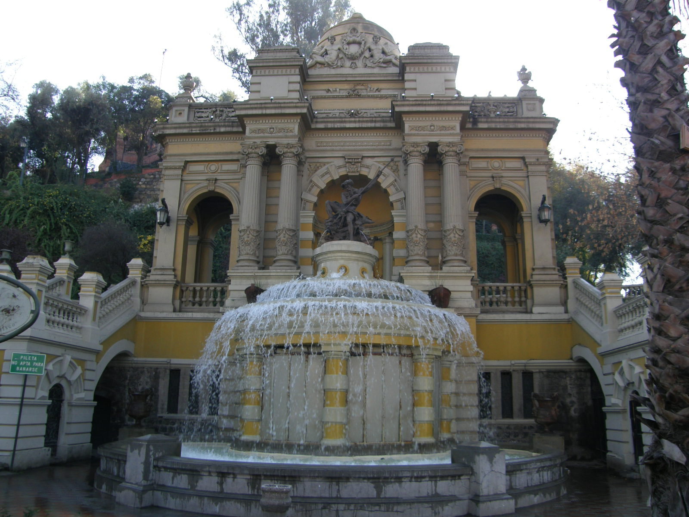

Chile, oficialmente República do Chile (em espanhol: Loudspeaker.svg República de Chile (ajuda·info)), é um país da América do Sul, que ocupa uma longa e estreita faixa costeira encravada entre a cordilheira dos Andes e o oceano Pacífico. Faz fronteira ao norte com o Peru, a nordeste com a Bolívia, a leste com a Argentina e a Passagem de Drake, a ponta mais meridional do país. É um dos dois únicos países da América do Sul que não tem uma fronteira comum com o Brasil, além do Equador. O Pacífico forma toda a fronteira oeste do país, com um litoral que se estende por 6 435 quilômetros.4